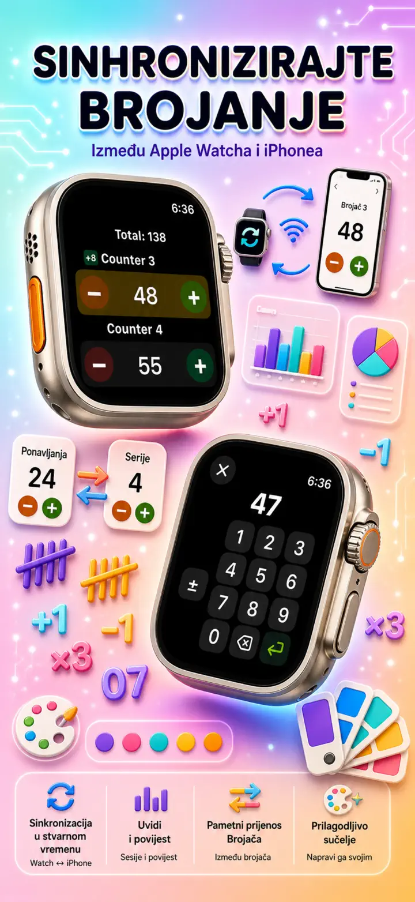
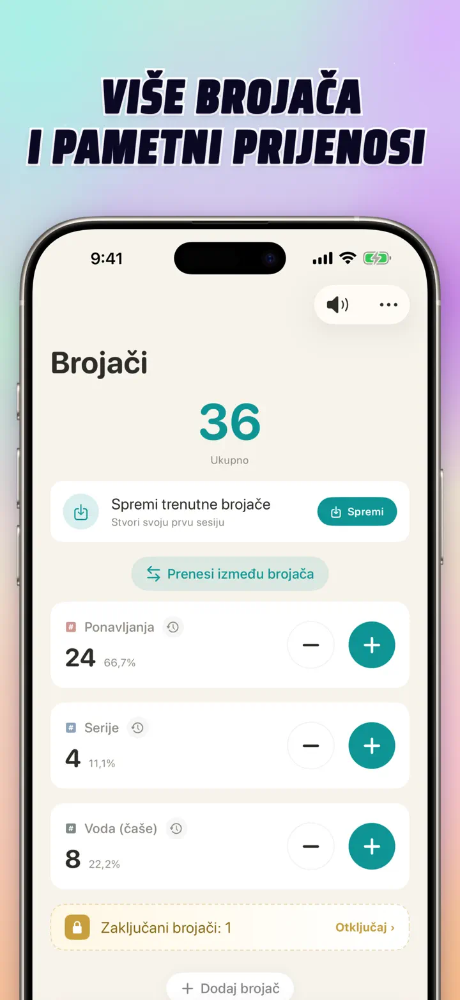
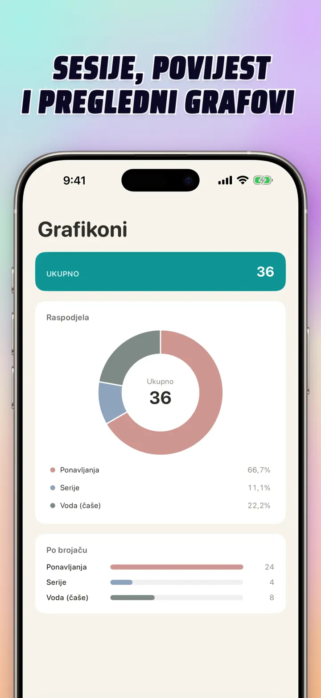
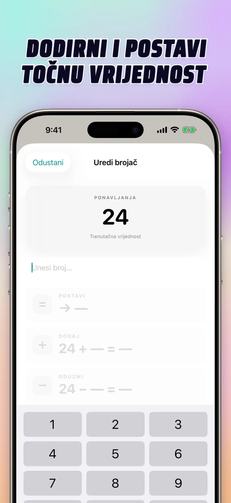
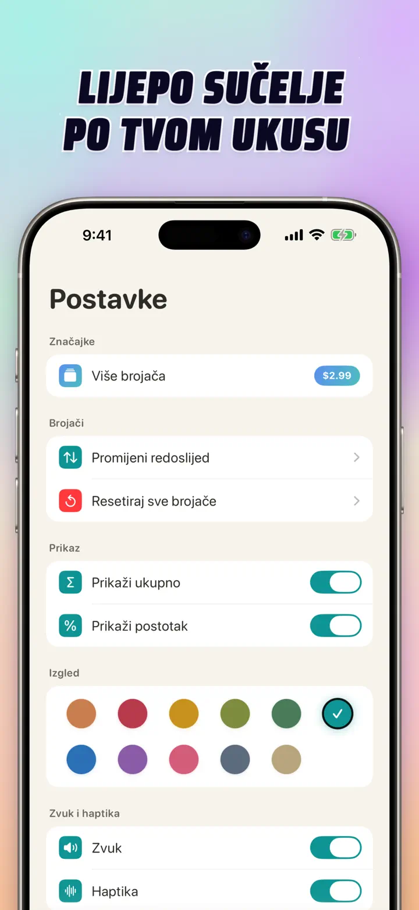
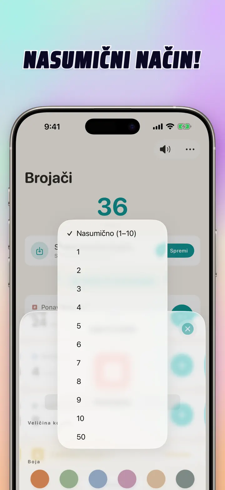

Brojač 123
Watch sync, klikovi, bodovi
Novo: widgeti na početnom zaslonu — dodirni +/- na widgetu bez otvaranja aplikacije. Brojač i klikač uz Apple Watch sync, nasumični način, grafikoni i povijest.
Preuzmi na App StoreuO aplikaciji
Brojač 123 je brzi i fleksibilni brojač za iPhone, iPad i Apple Watch. Daj imena brojačima, odaberi boju i broji bilo što — serije u teretani, redove u pletenju, krunicu, bodove u razredu, zalihe, rezultate igre. Sve ostaje lokalno na uređaju, radi bez interneta.
PRILAGOĐENI BROJAČI
- Izradi odvojene brojače za aktivnosti, igre, rutine ili popise
- Vlastito ime i boja za svaki brojač
- Povuci za promjenu redoslijeda
- Zadrži pritisak za brzo uzastopno brojanje
- Potpuno offline — bez registracije, bez oblaka
IZRAVNI UNOS I SKUPNE OPERACIJE
- Dodirni brojač da izravno postaviš početnu vrijednost — nema nuliranja
- Skupno +/-: promijeni brojač bilo kojim brojem jednim dodirom
- Prijenos: pomakni vrijednost s jednog brojača na drugi bez duple operacije
- Prilagođeni korak: jedan dodir dodaje 1, 5, 10, 100 ili što god odabereš
- Uživo pregled svake promjene
NASUMIČNI NAČIN
- Brojač može svaki dodir pretvoriti u novu vrijednost od 1 do 10
- Dodaj ili oduzmi nasumične vrijednosti tipkama + i -
- Korisno za vježbe, igre, nagrade, razredne aktivnosti i rutine
- Svaki nasumični dodir sprema se u povijest brojača
ZBROJEVI I GRAFIKONI
- Ukupni zbroj svih brojača na prvi pogled
- Prikaz u postocima: koliko svaki brojač doprinosi ukupnom
- Interaktivni stupčasti grafikon — prebaci između vrijednosti (#) i postotka (%)
- Sortiraj po vrijednosti za trenutačnu ljestvicu
POVIJEST I DIJELJENJE
- Potpuna povijest: svako dodavanje, oduzimanje i izmjena zabilježeni
- Spremi setove brojača i učitaj ih u trenu
- Podijeli konfiguracije s timom, učenicima ili prijateljima
- Povijest gledaj kao dnevni zapis, grupirane sesije ili statistiku po danu/tjednu/mjesecu
SYNC UŽIVO S APPLE WATCHEM
- Promijeni brojač na iPhoneu ili Apple Watchu i vrijednosti ostaju usklađene
- Stvarno nativna watchOS aplikacija — ne samo pratitelj
- Imena, boje i vrijednosti sinkronizirani na zapešću
- Dodirni za brojanje, zadrži za ponavljanje — izravno sa sata
- Radi samostalno kad iPhone nije pri ruci
ZA iPhone, iPad I APPLE WATCH
- Prilagodljivi rasporedi za svaku veličinu zaslona
- iPad prikazuje više brojača odjednom, podržava Split View
- Privatnost na prvom mjestu: lokalna pohrana, bez oblaka, bez računa
IDEALAN ZA
- Serije i ponavljanja u teretani
- Redovi pletenja i očica heklanja
- Krunica, tasbih, molitvene kuglice
- Bodovi u razredu i prozivka
- Rukomet, odbojka, košarka — brzi rezultat
- Stolni tenis
- Zalihe i popis skladišta
- Društvene igre, karte, belot, briškula
- Krugovi u bazenu i na stazi
- Promatranje ptica
- Brojanje posjetitelja na događajima
- Praćenje navika i ciljeva
Preuzmi Brojač 123 i neka svako brojanje bude jednostavno — jasno, brzo, privatno.
Pravila privatnosti: https://masawata.net/privacy-policy.html Uvjeti korištenja: https://www.apple.com/legal/internet-services/itunes/dev/stdeula/
Snimke zaslona






Brojač 123
Novo: widgeti na početnom zaslonu — dodirni +/- na widgetu bez otvaranja aplikacije. Brojač i klikač uz Apple Watch sync, nasumični način, grafikoni i povijest.
Preuzmi na App Storeu